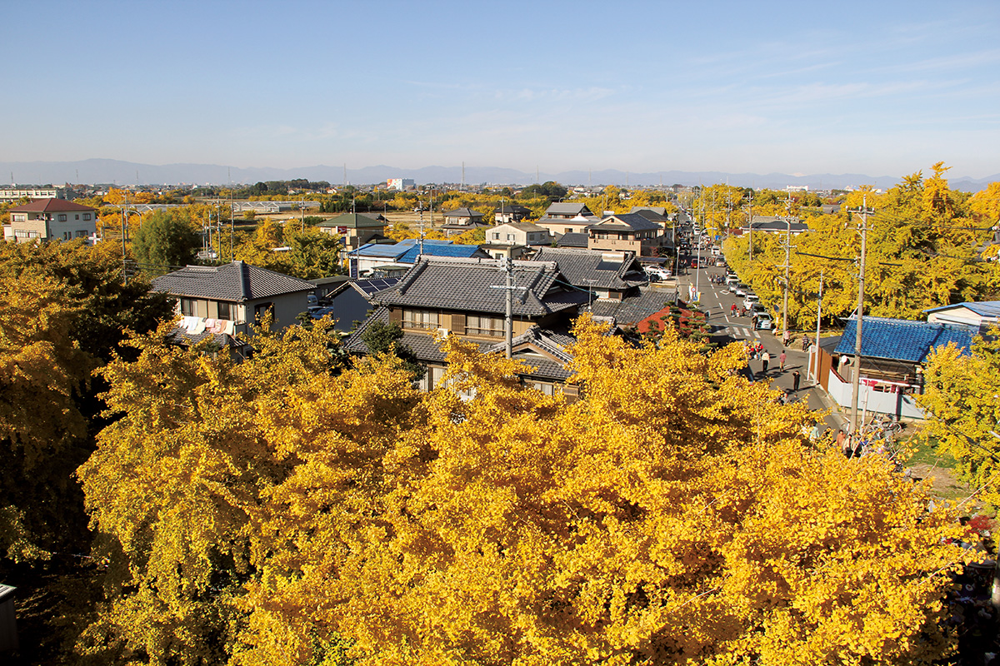
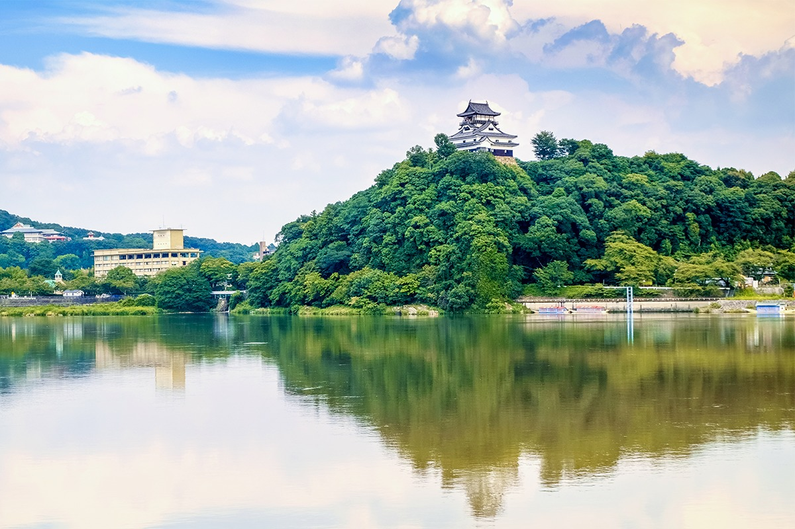
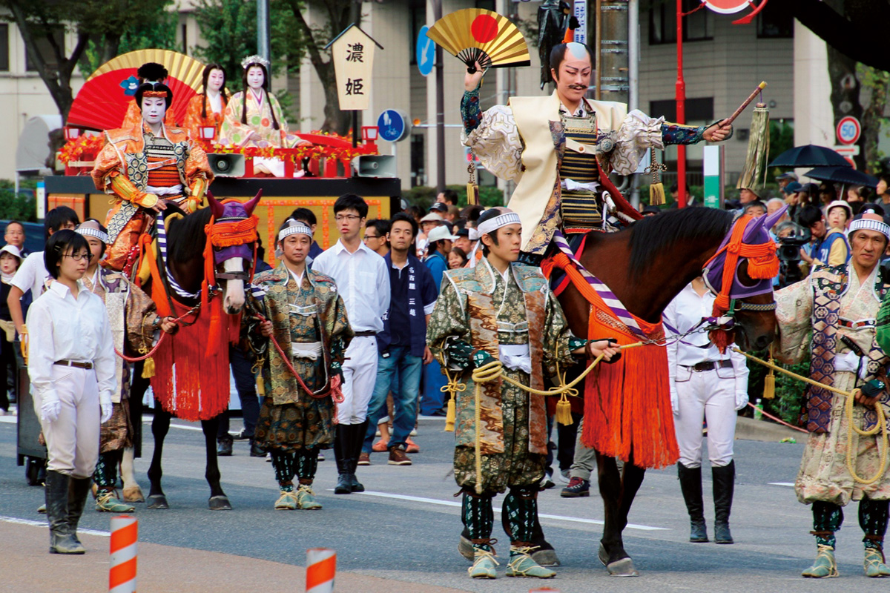
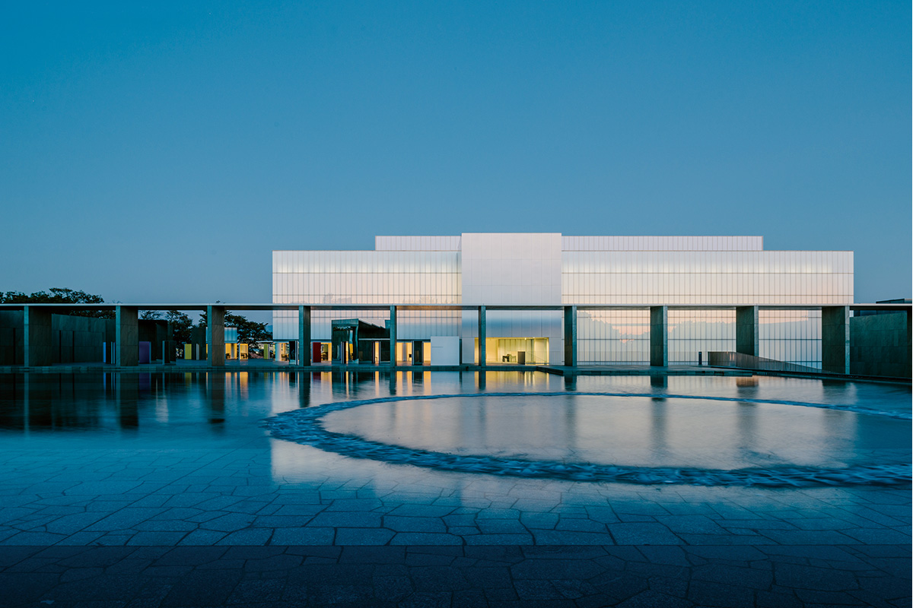
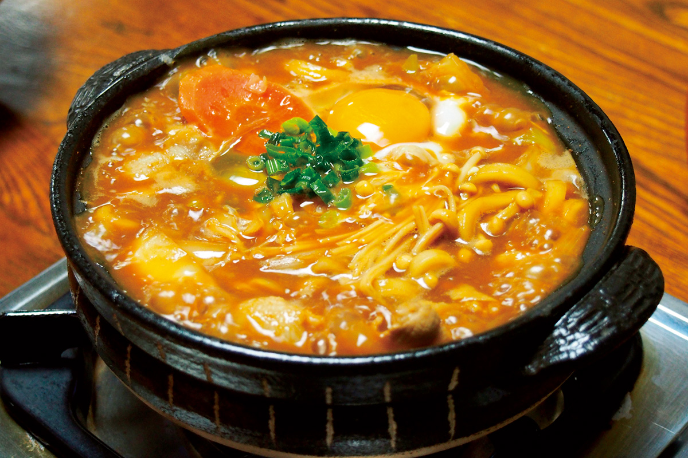
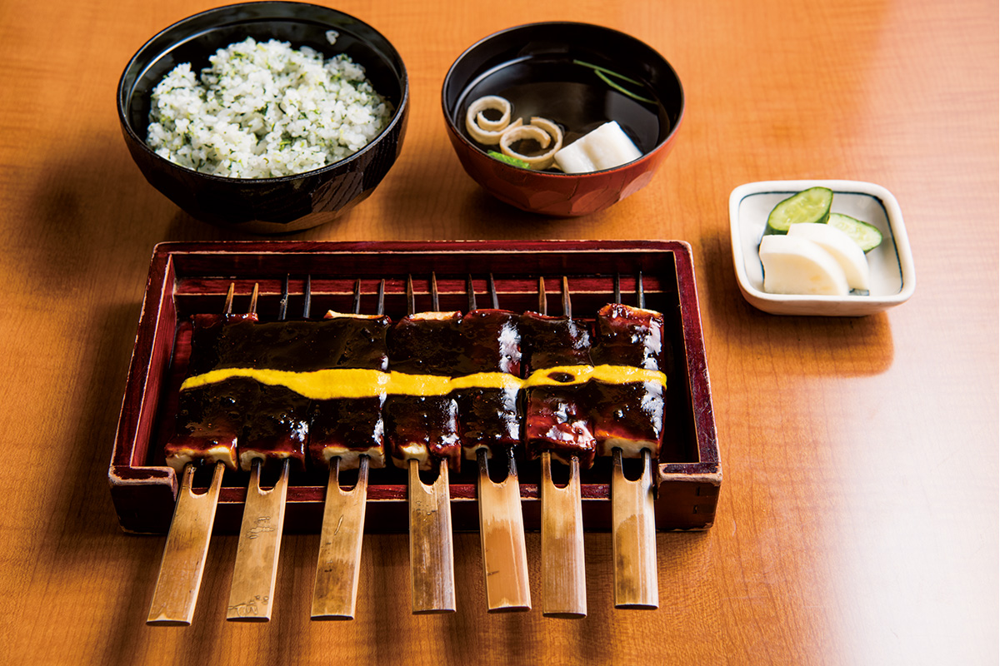
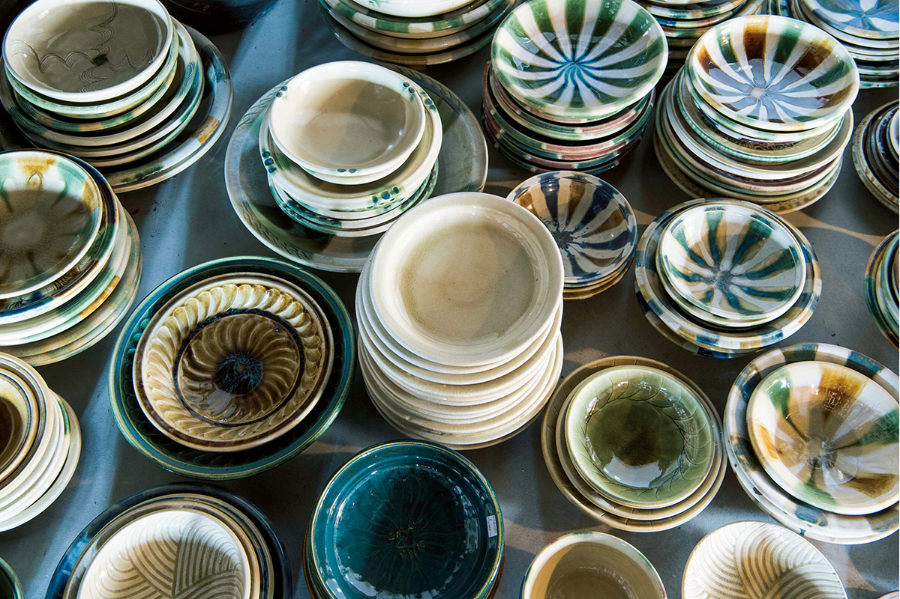
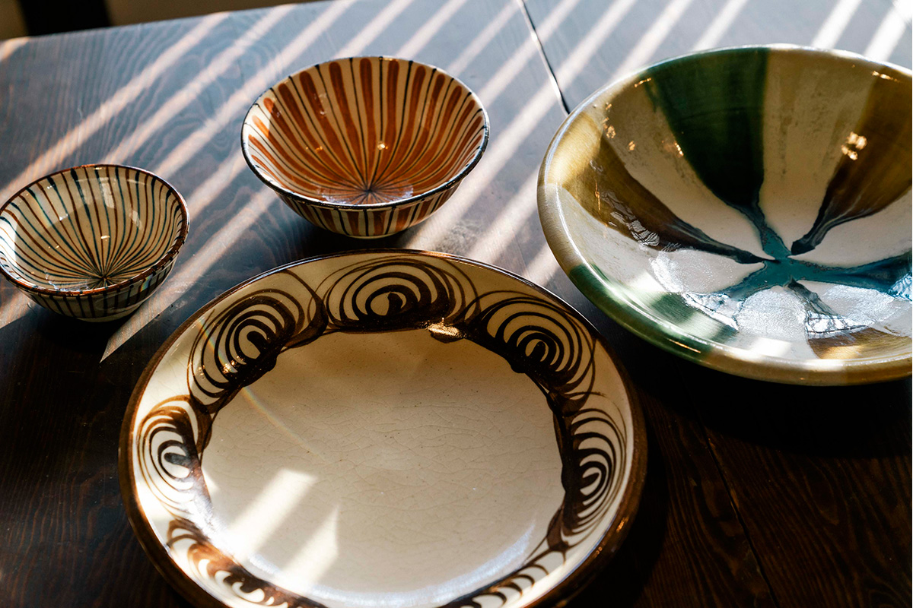

Префектура Айти
Айти: страна мастеров, где делают всё

Поздней осенью городок Собуэ утопает в золоте: больше десяти тысяч гинкго окрашиваются почти одновременно.
Здесь родились три объединителя Японии, здесь же делают машины, керамику и мисо, а по выпуску промышленной продукции префектура первая в стране. Рассказываем, за чем ехать в префектуру Айти.
О префектуре
Земля, где родились объединители Японии
В эпоху Сэнгоку, то есть в XVI веке, когда страна воевала сама с собой, эти земли делились на две области, Овари и Микава. Отсюда вышли трое, кто страну объединил: Ода Нобунага, Тоётоми Хидэёси и Токугава Иэясу. Памятных мест, связанных с ними, здесь много.
В эпоху Эдо, то есть с XVII века, здешним краем правил род Овари-Токугава, одна из трёх боковых ветвей династии сёгунов. Ветвь держала замок Нагоя, и вокруг него рос город.
Сегодня Айти это один из трёх крупнейших районов страны и одна из самых промышленных префектур: здесь делают автомобили, электронику, станки и сталь, и по стоимости отгруженной продукции префектура первая в Японии. Растениеводство тоже сильно: по овощам и цветам Айти впереди, а по цветам держит первое место с 1962 года.
Что посмотреть
Золотой город под деревьями гинкго
Гинкго в Собуэ
Городок Собуэ знаменит деревьями гинкго, чьи листья осенью становятся золотыми. Поздней осенью здесь одновременно желтеют больше десяти тысяч деревьев, и весь городок покрывается золотым светом.
- Телефон
- +81 587-97-5800
- Справки
- торговая палата городка Собуэ
Что ещё посмотреть
- Святилище Ацута-дзингу, один из важнейших синтоистских храмов страны, где хранят священный меч
- Замок Инуяма, один из самых старых деревянных замков Японии, стоит на холме над рекой
- Музей искусств Токугава, собрание сокровищ рода сёгунов Токугава

Праздники
Шествие объединителей страны
Праздник Нагои
Главный номер праздника это шествие «трёх героев»: Ода Нобунага, Тоётоми Хидэёси и Токугава Иэясу в исторических костюмах идут по городу в сопровождении шестисот человек свиты. Кроме этого парада в программе ещё десятки событий.

- Период
- каждый год в октябре
- Место
- замок Нагоя, парк Хисая-Одори и другие места в городе Нагоя
Другие праздники
- Доманнака-мацури, праздник танца в центре города, в танцах участвуют десятки команд
- Хосимацури в Андзё, летний праздник с бумажными фонарями и украшениями из разноцветных шаров
- Фейерверк Токай, большой летний фейерверк на побережье
Музеи и архитектура
Музей на месте старого замка
Музей искусств города Тоёта
Музей стоит на холме, где раньше был замок: отсюда виден весь город Тоёта. Здесь собраны работы японских и зарубежных художников XX века. Строгое современное здание спроектировал архитектор Танигути Ёсио, известный и своими музеями за границей.

- Адрес
- 8-5-1 Kozakahonmachi, Toyota, Aichi
- Телефон
- +81 565-34-6610
Что ещё посмотреть
- Музей искусств Нагои, городское собрание живописи и графики
- Покои замка Нагоя, восстановленные парадные залы с росписями
- Музей искусств префектуры Айти, большая коллекция японского и западного искусства
Местная кухня
Лапша, которую варят в глиняном горшке
Мисо-никоми удон
Эту лапшу варят прямо в глиняном горшке донабэ на бульоне из бобовой пасты мисо. Бульон получается густым и очень насыщенным, а лапша остаётся жёсткой: считается, что так вкуснее. Часто в горшок разбивают сырое яйцо.

Что ещё попробовать
- Хицумабуси, угорь на рисе, который подают в несколько приёмов
- Кисимэн, плоская и широкая пшеничная лапша
- Дотэ-ни, говядина с овощами, томлённая в мисо
Где поесть
Дэнагаку и рис с зеленью
Кайсю, Тидзан-дэнагаку
Этому заведению больше двухсот лет: оно работает с эпохи Эдо. Здесь готовят дэнагаку, то есть тофу, обмазанный густой пастой мисо и поджаренный на углях, а подают его с на-мэси, рисом с мелко нарезанной зеленью редьки.

- Адрес
- 40 Shin-honmachi, Toyohashi, Aichi
- Телефон
- +81 532-52-5473
- Время работы
- с 11:30 до 15:00, последний заказ в 14:30, и с 16:30 до 20:30, последний заказ в 19:30
- Выходные
- среда
- Сайт
- kikusou.jp
Ремёсла
Керамика из Сэто, где началась японская посуда
Сэто-хонгё-яки
В городе Сэто керамику делают с давних времён, и его название даже стало словом: по-японски «сэтомоно» значит «керамика». Местная школа хонгё-яки это ручная работа: желтоватая глазурь кисэто, трёхцветные поливы сайсай, узор «лошадиный глаз» и рисунок под солому.

- Телефон
- +81 561-84-7123
- Сайт
- seto-hongyo.jp

Что привезти
Лимонад из лимонов без обработки
Лимонад «Хацкой»
Лимонад делают из лимонов, которые вырастили без химической обработки. Часть плодов отжимают вместе с кожурой, а сладость даёт свекольный сахар с острова Хоккайдо, который, по словам производителя, полезен для пищеварения. Набор из семи бутылок по 180 миллилитров стоит 2100 иен.
- Телефон
- +81 532-41-2033
Где остановиться
Рёкан, где готовят рыбу фугу
Какудзё-ро
Этот рёкан открылся в 1926 году. Номера здесь пахнут деревом и хранят атмосферу эпохи Сёва, то есть середины прошлого века. На ужин подают блюда полуострова Ацуми и, в сезон, блюда из рыбы фугу: в этих водах её ловят много.
- Адрес
- 38 Shimojichi, Fukue-cho, Tahara, Aichi
- Телефон
- +81 531-32-1155
- Комнат
- 15
- Цена
- от 24 840 иен за ночь с двумя приёмами пищи, налоги и обслуживание включены
- Сайт
- kakujoro.com
Местный диалект
Как здесь говорят «очень вкусно»
- доэрьяа умьяаочень вкусно
- ёо иряаситадобро пожаловать
- кэнаруйзавидую
- тяттопоскорее
Рекорды
В чём Айти первая в стране
- №1 перилла: первое место по производству
- №2 перепелиные яйца: первое место по производству
- №3 легковые машины: первое место по числу машин в стране
Вопросы и ответы
Что ещё спрашивают об Айти
В каком зоопарке больше всего видов животных в Японии?
В зоопарке Хигасияма в Нагое. Он открылся в 1937 году, и здесь живёт около пятисот видов животных: от коал и львов до гориллы Сибани, которая стала местной знаменитостью.
Какой предмет, придуманный в Нагое, попал в собрание нью-йоркского Музея современного искусства?
Лапшевая вилка. В сети «Скагия» годами пользовались ложкой с зубцами на конце, и её решили выпустить отдельным товаром. Предмет оказался и удобным, и удачным по форме, поэтому его взял в коллекцию Музей современного искусства в Нью-Йорке.
Справочник
Айти в цифрах
| Центр префектуры | город Нагоя |
| Города и посёлки | 38 городов, 14 посёлков, 2 деревни |
| Площадь | 5173 кв. км |
| Население | 7,54 миллиона человек |
| Плотность населения | 1457 человек на кв. км |
| Туристов за год | 31,67 миллиона |
| Дерево префектуры | хананоки, редкий клён |
| Цветок префектуры | ирис-какицубата |
| Птица префектуры | сплюшка оокаку |
| Средняя температура | +16,9 |
| Максимум | +35,3 |
| Минимум | +0,2 |
| Осадки | 1696 мм |
| Ясных дней | 37 |
| Дождливых дней | 111 |
| Снежных дней | 17 |
| Онсэнов | 34 |
| Гостиниц и рёканов | 750 |
| Музеев искусств | 19 |
| Музеев | 50 |
| Митиноэки, придорожных станций | 17 |
| Национальных сокровищ | башня замка Инуяма, зал Митядо храма Конрэндзи, всего 9 |
| Важных культурных ценностей | 440 |
| Исторических мест | 39 |
| Природных памятников | 26 |
| Всемирное наследие | нет |
| Национальные парки | Тэнрю-Окумикава, Айти-Когэн, залив Микава, всего 4 |
Природные памятники
- Берег реки Кисо, широкая пойма с зарослями, известная далеко за пределами префектуры
- Место обитания ланцетника у острова Осима, отмель, где живёт редкое морское животное
- Семь водопадов храма Адзи, каскад на горной реке
- Скала Умасэ, валун необычной формы на склоне